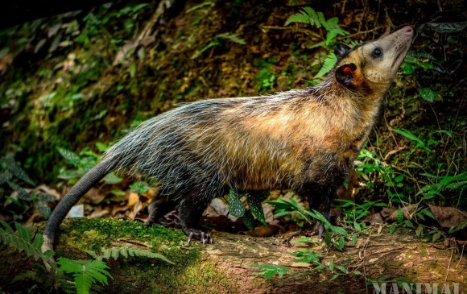

Descripción
La zarigüella es un mamifero de 15-20 cm son invertebrados pueden pesar aproximadamente 0.1-12.5 ks su vida promedio es de 5 a 8 años este vertebrado suele ser nocturno y es solitario y esta cubierto de pelo aunque en la parte inferior suele estar desnudo para que les sea mas fasil escalar los arboles o agarrar su comida aunque por lo general se alimentan de insectos su camada promedio suele ser de dos, su habitad preferencial son los bosques y selvas tropicales las zariguellas son unimales anomada aunque suele moverse de zona cuando este empieza de carecer de agua y de alimentos. Este animal cuando se siente amenazado suele hacercen los muertos y hasta imitar su olor, no suelen cavar sus madrigueras o huecos usan las que ya estan hechas por otros animales. Su gestacion es de un par de semanasy tienen entre 2 a 4 crias y abandonan su bolsa a los 6 y 7 meses

¿POR QUE SE DA SU DESAPARICION O MUERTE?
Principalmente por el choque con veiculos de ecoturistas o por que en algunas regiones suelen considerarce cmo plagas por que suelen cazar en basureros urbanos y los matan
¿COMO SE PODRIA PRESERVAR LA ESPECIE?
Principalmente respetando su habitad tener una especie de carteles con informacion de donde podriamos encontar estos animales y asi poner mas cuidado y no chocar con ellos y la contaminacion tambien es un factor fundamental ya que muchos alimentos pueden tender a desaparecer y asi causando un daño mas para ellos y deberiamos sembrar para asi darles un habitad de mas agrado ya la naturaleza nos a dado mucho nos toca a nosotros
SU NIVEL DE EXTINCION: (ES DE COLOR ROJO) MUY PREOCUPANTE